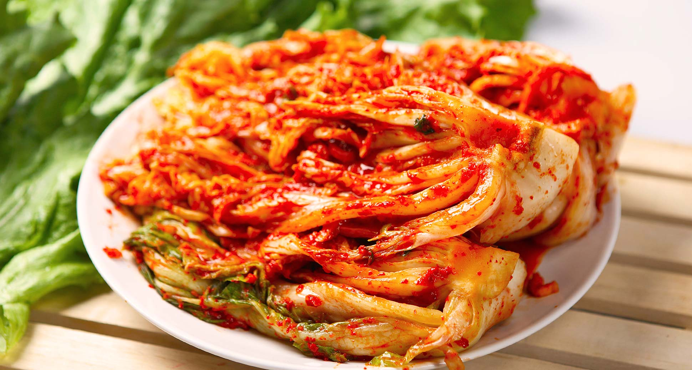

Блюдо "Кимчи"
Кимчи – основное блюдо Кореи. Ни один корейский стол невозможно представить без кимчи. В последнее время оно все больше привлекает внимание мировой общественности, и становится все более знакомым и употребляемым блюдом. Самое известное кимчи – это квашенная в остром красном перце капуста, однако на самом деле видов кимчи существует довольно много. Корейцы относят кимчи к одному из главных символов страны. Узнать больше
| Пищевая ценность | |||||
|---|---|---|---|---|---|
| Питательное вещество | на 100 грамм | ||||
| Энергетическая ценность | 32 ккал | ||||
| Белки | 2,0 гр | ||||
| Углеводы | 1,3 гр | ||||
| Жиры | 0,6 гр | ||||
Рецепт приготовления кимчи
здесь будет рецепт